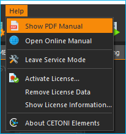
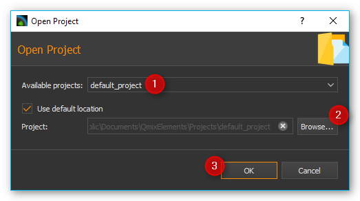

2. CETONI Elements - An Overview
2.1. First Steps
The first time the software is started, a default configuration is loaded: The software loads only its core without any device-specific plugins. The default configuration is active, when you see the following startup screen (figure below).

Important
Also after a system crash or after an update of the software, the default configuration is loaded, and the start-up screen appears.
If you want to start the application in demo mode, eg for presentations and tests or if you currently have no real equipment, then click the Start Demo button.
2.2. License Keys
2.2.1. Activate License
Right after the initial installation of the software, you have an active demo license. To view your installed licenses, select from the main menu.

The demo license allows you to create device configurations with simulated devices and to test all functions of the software.

In order to use the software to control your devices, you must register the license code you have received in the software. To do this, select in the main menu.

In the license activation dialog, enter your license code and then click the Activate button. If you have entered the license key correctly, the activation of the license is confirmed and after restarting the software you can work with the activated license:

If you want to upgrade your license or activate additional licenses for further add-ons, you can proceed exactly as described above.
2.2.2. Overview of Activated Licenses
Using the menu item in the main menu of the application, you can display an overview of the current licenses:

2.2.3. Remove Licenses
If you want to remove all licenses, select from the main menu. It is not possible to remove individual licenses, you can only remove all licenses together. After removing the licenses, you will work with a demo license again.
2.3. Device Configurations
You have to install and load a device configuration, in order to be able to control your devices with the software. A device configuration is a folder with a set of XML files which contain a complete description of the configuration of all devices in the current setup. Only devices that are properly configured in the device configuration are available in the CETONI Elements software. In the startup screen you can see all ways to get to a valid device configuration:
2.3.1. Create Configuration

The Create Configuration button allows you to create new device configurations. To use individual devices or complete systems consisting of several individual devices in CETONI Elements, you must create a device configuration. For this purpose, use the Device Configurator, which is integrated in CETONI Elements. For detailed instructions on how to create device configurations, see Device Configurator section.
2.3.2. Open Configuration
This allows you to load an existing device configuration that was previously installed on your system.
2.3.3. Import Configuration
{kind=link}
Select this menu item to install a device configuration from a disk or USB-stick (eg from CETONI Elements installation CD)
For most devices and modules you can create your own device configurations with the CETONI Elements Device Configurator. If you have devices that are not supported by the Device Configurator or if you use devices that need to be preconfigured by CETONI, you will find the device configuration on the installation media (CD or USB stick) that you received with your device.
Perform the following steps to import an existing device configuration:
Tip
If you create a configuration with the Device Configurator, the configuration will be installed automatically and you don’t need to perform the following steps.
Select the menu item from the main menu.

Now select whether you want to import a folder with a device configuration (Import Folder) or a compressed device configuration file (Import .qcf File). On the installation media that came with your device, the device configurations are stored in folders. Therefore, select the item Import Folder.

In the dialog that now opens, select the
DeviceConfigurationdirectory on the installation CD or browse to another directory containing a valid device configuration.
Now enter a unique name for the configuration under which it will be stored on your computer.

Acknowledge the query to restart the application.

After completing these steps, the software with the device-specific plugins will start to load.
Important
When importing, device configurations, these are always imported into the current project.
2.3.4. Export Device Configuration
You can also export device configurations. If you would like to give a
device configuration to employees or if you need the send a device
configuration to the CETONI support staff, then you should export a
device configuration as compressed .qcf file. To export a device
configuration, select the main menu item
.

Device configurations are exported as compressed *.qcf files.
2.4. CETONI Elements – The Basics
2.4.1. Introduction to CETONI Elements
The CETONI Elements application is a plugin-based, modular software solution for controlling a wide range of laboratory automation devices, in particular CETONI’s Qmix modules. The software consists of a core, which provides the basic functions and services. This includes the application window, the event log, and the toolbar.
This core system is then expanded by device- and application-specific software modules, referred to as plugins. They provide the user with specific software solutions appropriate for virtually any device configuration within the standardized user interface.
2.4.2. Show User Manual
The software PDF manual can be accessed via the application’s help menu ().
Important
A PDF-viewer must be installed on your system to be able to view the PDF software manual.
To show this online software manual select the menu item .
2.4.3. Show Software Version
If you need to know the version of the installed CETONI Elements, e.g., for service purposes, select from the main menu (see figure below).

2.5. The Main Application Window
The application window of the software consists of the following central components:

Main menu
Toolbars (can be freely positioned and can be hidden)
Sidebar for showing Views (can be freely positioned and can be hidden)
The individual Views, which can be moved freely in the user interface
Status bar
2.6. Title bar
The title bar displays the application name, the current project path and the name of the currently loaded device configuration. The following example illustrates this more clearly. If the title bar contains the following text:
CETONI Elements – C:\Users\Public\Documents\CETONI Elements\Projects\default_project [demo (shared)]
then you will get the following information:
- application name:
CETONI Elements
- current project path:
C:\Users\Public\Documents\CETONI Elements\Projects\default_project- device configuration:
demo (shared)
2.7. Views
2.7.1. Introduction to Views
The Views are windows that contain the display and control elements for a specific task or device. For example, there are Views for the graphical logger, the display of I/O channels or for the script editor.
All views can be freely moved within the main window via drag & drop. All views can be shown and hidden and the views can also be removed from the main window via drag & drop to move them to another screen. This allows you to adapt the user interface of the CETONI Elements software optimally to your requirements and your application and thus configure an individual graphical user interface.
2.7.2. Show Views
When you start the software, not all views may be displayed. To display a view, select from the main menu. You will then see a menu with all views that are available in the application. Simply click on the corresponding menu item to display the view (see figure below).

For certain devices, there may be a separate view for each device (e.g. for cameras). In this case, the views in the View menu are grouped together and can be displayed individually.

Alternatively, you can show some views via the Sidebar without having to open the main menu.
2.7.3. Moving Views
To move a view, you must first detach it from its current position. There are several ways to do this. The first option is Drag & Drop. To do this, click with the left mouse button on the tab of the view ❶ and simply drag the view from its position ❷ with the mouse button held down. As long as you do not release the mouse button, you can move the view freely (see figure below).

Alternatively, you can detach the view from its position by double-clicking on its tab. The third option is the context menu of the view. To do this, right-click the tab and choose Detach from the context menu.

If you have detached the view from its position, the view is displayed in a separate window. Like any other operating system window, you can now enlarge, reduce, maximize, or move this window to another screen.
2.7.4. Docking Views
You can dock views, or groups of views which have their own window, into the main window or any other view window via drag & drop. To do this, simply drag the window of the view over the target window into which the view/view group should be docked. The destination window will then display icons - the drop targets. These target markers indicate the areas in which the window can be inserted. If your target window contains only one view, you will see the following 5 drop targets.

If you move the mouse cursor over a drop target while moving a window, a colored frame (drop preview) indicates the position (dock area) where the view would be inserted.

If you now release the mouse button over the target marker, the window is inserted at the position indicated by the drop preview.

If you select the symbol in the middle of the window as the drop target, the new view is inserted as an additional tab on the position of the existing view.

If you drag your view over a window that already contains several views, additional drop-target markers are displayed. This means that you then have additional options for docking the view window. You can see this in the figure below. There are the outer drop targets ❶, which you already know from the previous section. In addition, there are five other drop targets that are displayed in the form of a cross ❷.

Move the window with the mouse button pressed over the individual markers to see the drop preview and to get a feel for the possibilities for docking a window.
If you want to dock a view as an additional tab, you can move the mouse cursor either over the middle drop-target icon ❶ (see figure below) or over the title bar of an already docked view ❷.

2.7.5. Moving View Groups
Not only individual views can be moved but also complete view groups in which several views are tabbed. To move a complete view group, do not click on the tab of the view, but in the title bar of the group (see figure below). You can now drag and drop the entire group with all tabs from the current position and move it to a new position.

Alternatively, you can detach a view group by double-clicking in the title bar ❶ of the group, via the menu item Detach Area ❷ in the context menu or by clicking the Detach button in the title bar ❸.

You can dock a view group or a window with several views in exactly the same way as a window with only one view.
2.7.6. Closing Views and View Groups
You can close a single view either via the Close button ❶ in the active tab or via the menu item Close ❷ in the context menu of a tab.

A view group can be closed with the Close. button ❶ in the title bar of the group or with the Close Area menu item ❷ in the context menu of the view group.

2.7.7. Useful stuff when working with Views
If you have view groups with a large number of views, it may be difficult to navigate between the individual views in the group due to the number of tabs and the labels that are then truncated. In this case, you can use the corresponding button in the title bar of the view group to call a menu with all views of the group and select the corresponding view.

If you want to “clean up” a view group quickly, you can use the context menu to close all views except the currently active view. To do this, select Close Others from the context menu of the active tab.

If you want to quickly “clean up” a window, for example the main window of the application, you can use the context menu of a view group to close all other groups. To do this, select Close Other Areas from the context menu of the view group.

2.8. Perspectives
2.8.1. Introduction to working with perspectives
Different tasks, different devices or even different users require a different arrangement of views. By moving the individual views, you can optimally adapt the interface to your requirements, to the way you work, or to your PC hardware.
Once you have found the perfect arrangement of views for a particular task, you can save this arrangement with a specific name. This stored, names arrangement is called a perspective in the software. If you have created several perspectives, you can rearrange the entire interface of the application and adapt it to a new task or requirement with a single mouse click.
You can activate a perspective using the corresponding button in the toolbar.

When you click on the button, the default perspective is loaded. If you click on the arrow next to the button ❶ (see figure below), you will open the menu for selecting a previously created perspective ❷.

When you click on a perspective, the views in the user interface are arranged in the same way as when the perspective was created. Alternatively, you can access the perspectives from the main menu. To do this, select the menu item .

Tip
If you have lost the overview when arranging the views or if you want to start again with the arrangement of the views, simply use the Perspective button in the toolbar to call the Standard Perspective Default.
2.8.2. Creating Perspectives

To create a perspective, click the Create Perspective button in the toolbar. Then enter a unique name for this perspective in the input dialog and click OK.

The new perspective is now available in the Perspective menu.
2.8.3. Deleting Perspectives
To delete perspectives, choose Manage Perspectives from the Perspectives menu.

A dialog with a list of all perspectives is now displayed. In the list ❶ you can select single or multiple perspectives just like in the file explorer. You can use the Shift key to select several related entries. With the help of the Ctrl key you can click several entries one after the other and select them.

If you then click the Remove button ❷, all selected perspectives will be deleted.
2.9. Sidebar
The sidebar allows you to quickly display different views. Some buttons show a specific view directly. Other buttons allow several views to be displayed and display a menu for selecting the view (see figure below).

Tip
The sidebar, and also all toolbars, can be freely positioned and arranged in the peripheral areas of the main window. If you right-click on a toolbar, you will see a menu for showing and hiding the toolbars.
2.10. Event Log
Important events are displayed in the Event Log. This includes notes, warnings and error messages. The view with the event log is automatically displayed when an event is written to the log.

If you want to display the event log view manually, select from the main menu of the application.

The event log lists the individual events in chronological order. The latest event is always in the first row. This can be seen from the time stamps in the first column.

When connecting to the device hardware, it may happen that device errors are received and displayed in the event log. You can ignore and delete these errors if the event log contains a more recent message from the same event source (the same device) in which the error-free state of the device is reported.
In this example (see figure above), all 3 axes of the rotAXYS sample handler report an error ❶. However, the most recent top three messages ❷ show, that there is no more error and that the device works without errors. So you can safely ignore the previous error event.
2.10.1. Event Categories
In the event log, the different event categories are marked by colour and corresponding icons.
 blue - Information
blue - InformationGeneral information, status messages or non-critical messages from script functions with an informative character. These events indicate, for example, that a certain operation has been successfully completed or that a certain state has been reached.
 yellow - Warning
yellow - WarningWarning events indicate that a specific event has occurred that may have an impact on the system or application. They indicate a possible problem, but the application / script may continue to function.
 red - Error
red - ErrorThese events indicate that errors have occurred that may cause the script, the application or certain devices to no longer function correctly.
 green - User Interaction
green - User InteractionThese events inform the user that user interactions, such as pressing a button or confirming a message, are required.
2.10.2. Event Log Actions
Various actions are available in the Event Log header ❶ or via the context menu ❷:


With the Filter action, you can filter the event log according to a certain event category. This makes it easier to keep track of many entries in the log or to find specific events.


When new events are written to the log, the system automatically scrolls to the last element inserted so that the most recent element is always visible. If the event log is to be searched for a specific entry or if you want to analyze the chronological sequence of events, this automatic scrolling may be undesirable. In this case, check the Scroll Lock button to deactivate automatic scrolling.

By clicking the Export To File button, you can export the contents of the event log to a text file. After you have assigned a file name, the file is saved and you can open it in any text editor.


You can clear the event log by pressing the Clear Event Log button.

If you right-click on a log entry that was caused by a script function, you will additionally see the menu item in the context menu. If you select this menu item, the function that caused the log event is displayed and highlighted in the Script Editor. A double click with the mouse on the corresponding log entry gives the same result.
Tip
Double-click on a log entry to display the function in the Script Editor that caused the log entry.
2.11. Status Bar
The status bar displays a variety of information, such as the connection status to the device.
2.12. Connecting To Device
In the toolbar, you see the Connect to device button signified by the plug icon (see figure below). Press this button to connect CETONI Elements with your device(s).

Important
The device must be connected to the PC via USB and the power supply to the device must be switched on to connect to the device.
2.13. Working with projects
2.13.1. Introduction to projects
If you work with the CETONI Elements software, then you always work in a certain CETONI Elements project. A project stores all project-related data like current device configuration, application-specific device names, syringe and tubing configurations, scaling factors, flow rates, SI units and much more. That is, when you load a project, all user-specific settings are loaded. So you can easily switch between different projects or share projects with other employees.
The Title bar always shows your current project path. If you select the menu item in the main menu, the current project will be opened in File Explorer.

In the File Explorer you can see
the project-specific data of your current project. Each project has a
fixed structure of files and sub directories. In the
projectsettings.ini file all project-specific settings are saved. In
addition, the following sub directories exist in the project directory:
Configurations– this directory stores all device configurations that you import or create with the device configuratorData– this is a directory in which the plugins can store data that can not be saved in the project settings fileLog– used to store log files such as CSV files generated by CSV logger.Pictures- stores all image files that are recorded in the project (for example, by script functions or from the camera plugin).Scripts– all script files that are created in a project are to be stored in this directoryVideos– video files that are generated by the camera plugin will be stored in this directory
2.13.2. Creating a new project
To create a new project, select the menu item from the main menu.
In the dialog window that is then displayed, you can configure the new project. First enter a unique project name ❶. Then select whether you want to copy the settings of the current project into the new project via Copy current project settings or whether you want to start with an empty project via Create empty project ❷.
Then select the location where the project folder is to be created. If
the checkbox Use default location ❸ is checked, the project
will be created in the Projects directory of the CETONI Elements data
folder. If you want to select a different storage location, for
example, to save the project on an external device, remove the check
mark ❸ and select the location by clicking the Browse button ❹.
Complete the creation of the new project by clicking OK ❺.

Important
Save project data, such as scripts, images, log files, etc., in the project directory or subdirectories whenever possible. This is the only way to ensure that all important data is exported or saved during project export.
2.13.3. Open an existing project
To open an existing project, select the menu item from the main menu.

In the dialog window that is now displayed, you can use the selection box ❶ to select a project from the standard project directory. You can also select a project by typing the project name into the selection box. The selection box supports you while typing, through the display of matching projects. If your project is not stored in the default directory, click the Browse button ❷. You can then select a project directory with the help of a directory selection dialog window (for example, on an external device).

Then open the new project by clicking OK ❸.
2.13.4. Export current project
If you want to archive your project or pass it on to another user, you
can do this quickly and easily by exporting the project. During project
export, all the data of a project that is in the project directory and
which you select for export are stored in a compressed project file
*.qpr.

To export a project, you must first open the project in the software. From the application’s main menu, select .
In the export window that appears, you can now select which directories of the project ❶ are to be exported.

Click the Select All ❷ or Select None ❸ buttons to select all elements or no element.
Important
Exporting directories with large amounts of data, e.g. Pictures and Videos directories, leads to large project files and longer times for the export of a project. Export such directories only if it is necessary for the transfer of data.
During the export, you will be informed about the current state of the export by the Event Log ❶, the Progress Window ❷, and the Status Line ❸.

You can cancel the export at any time by clicking the Cancel ❹ button.
2.13.5. Importing projects
The import function allows you to import project files *.qpr into the
software. To do this, select from the main menu.

In the file selection window
that appears, select the project file *.qpr that you want to import.
You will then see a window where you enter the name under which the
imported project should be stored in your CETONI Elements project
directory.

Important
Assign a unique project name. If you use a name for which a project already exists in the project directory, an import is not possible.
During the import, you will be informed about the current state of the import by the Event Log ❶, the Progress Window ❷ and the Status Line ❸.
You can cancel the import at any time by clicking the Cancel ❹ button. After successfully importing the project, the software will offer you to load the imported project.

Click Yes to restart the software with the imported project.
2.14. Global Settings
2.14.1. Open settings dialog
The configuration dialog for the global application settings can be opened via the menu item in the main menu of the application.

On the left side you will find the different settings categories. Select a category for which you want to configure the global settings. On the right side you will see the settings that you can configure for the selected category.
Click Apply to accept the changes or OK to accept the changes and close the dialog.
2.14.2. General Settings
Auto Connect
If this option is enabled, CETONI Elements automatically connects to the attached devices after startup. If you register CETONI Elements.exe in the Windows Autostart, you can start the CETONI Elements software fully automatically after switching on the computer and establish a connection to the device without any user intervention being necessary.
2.15. Personalize Color and Style
Via the menu item in the main menu of the application you open the configuration dialog of the application. There you will find the Color & Style ❶ section with the settings for customizing the design of the graphical interface.

You can customize accent color by selecting a color from the palette of predefined colors ❷ or by defining your own color using the Custom Color button ❸.
Important
Adjusting the graphical user interface after a change blocks the application for a short time. You should therefore not perform these changes if you are working with devices or if a critical control application / script is active.
Using the Color Theme selection box, you can switch the complete color design of the application between different themes. For example, you can switch between a Light Theme and a Dark Theme to adapt the application to your wishes or to the corporate identity of your company. The following two screenshots show examples of a customized interface:
Example 1: Dark design with alternative accent color

Example 2: Light design with blue accent color

2.16. Restricting Access to the User Interface (UI)
2.16.1. Introduction to UI Access configuration
The software allows you to restrict access to control elements in the software using the UI-Access- Manager. You can configure which elements of the application are hidden for users. This may be desired, for example, if you have written a script for other users or employees. If you want to ensure that the devices are only operated via the script and not manually via the user interface controls, you can hide the relevant controls.
2.16.2. Configuring Access to User Interface Elements
To configure access to the software interface, select from the main menu.

The configuration dialog for UI access is displayed. In the first column ❶ you can see the elements of the user interface that you can hide and show. Within the individual groups (e.g. workbenches) the elements are sorted alphabetically.
In the second column ❷ you can see the configuration of the Default mode. This mode is always active when the software is started. I.e. this mode is the mode that every user sees without special authorizations. For each element, you can choose whether it is visible or hidden in the interface. This way you can easily hide controls from normal users.

The third column ❸ contains the configuration of the interface for access-protected mode. This mode is password protected. This means that you can access this mode by entering the password and thus show previously hidden operating elements.
Tip
For the protected mode, you should set all control elements to visible in order to have access to them if necessary.
You can set the password for the protected area by double-clicking in the corresponding cell of the third column and entering the password.

When you have finished the configuration, click the OK button to close the dialog and save the configuration.
Important
The configuration is saved in the current project. This means that the configuration of the interface is project-specific and not global.
2.16.3. Switching UI Access Mode
After starting the application, the standard mode is always active. This means that the interface is displayed with the configuration that you have configured for standard mode. To enter protected mode, select from the main menu.

After selection, the interface is immediately adapted according to the selected configuration. If you want to leave the protected mode, open the selection dialog again and then select the default configuration.